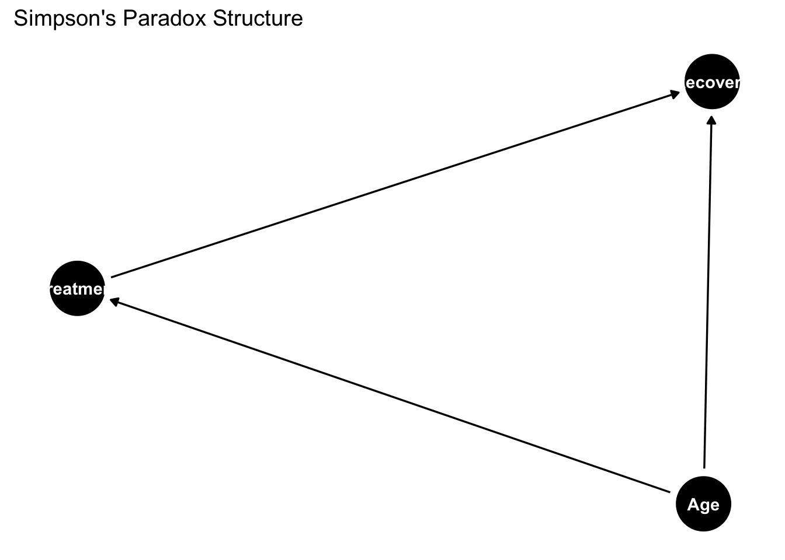

graph TD
DGP[Data Generating Process] -->|Generates| A[Population]
A -->|Random Selection| B[Sample]
B -->|Statistical Inference| C[Estimates & Conclusions]
C -->|Generalize back to| A
C -.->|Attempt to understand| DGP
style DGP fill:#1E90FF,stroke:#000,stroke-width:4px,color:#FFF
style A fill:#DC143C,stroke:#000,stroke-width:4px,color:#FFF
style B fill:#228B22,stroke:#000,stroke-width:2px,color:#FFF
style C fill:#8B4513,stroke:#000,stroke-width:2px,color:#FFF
classDef note fill:#F0F0F0,stroke:#000,stroke-width:1px;
D[["DGP:
Underlying process
that generates data"]]
E[["Population:
Entire group of interest"]]
F[["Sample:
Subset of population"]]
G[["Inference:
Drawing conclusions
about population
and DGP"]]
class D,E,F,G note
D --> DGP
E --> A
F --> B
G --> C
1 Introduction to Data Science and Statistics
1.1 What are Statistics and Data Science?
Important
Statistics and data science are both the art and science of learning from data – they help us understand the world through methodical analysis of collected information.
Statistics and data science provide essential tools for social science researchers, regardless of specialization. Whether you study political science, economics, sociology, or another social science field, these tools enable you to:
- Analyze social trends and behaviors
- Measure the effects of various policies
- Form conclusions based on empirical evidence rather than intuition
Statistics provides the mathematical foundations for data analysis, including research design, information synthesis, and hypothesis testing. Data science extends these capabilities by combining statistics with programming skills and domain knowledge, enabling work with complex datasets.
In today’s digital era, with rapidly expanding available data, these analytical competencies have become essential for contemporary researchers and social science specialists.
Note
In social sciences, data science constitutes a set of methods for solving complex research problems – combining statistical approaches, computational tools, and specialized knowledge to more effectively analyze social processes.
1.2 The Relationship Between Statistics and Data Science
Rather than viewing statistics and data science as separate disciplines, it’s more helpful to see them as complementary approaches within the spectrum of data analysis methods. Data science can be understood as a contemporary extension of traditional statistics that has evolved in response to:
- New technological possibilities
- The need to analyze increasingly complex social data
- The availability of computational tools for handling large datasets
1.3 Basic Concepts in Data Science and Statistics
1.3.1 Data and Populations
Data: Information collected during research – this includes survey responses, experimental results, economic indicators, social media content, or any other measurable observations.
Population: The complete set of units (individuals, institutions, events) that the research concerns – the entire group about which the researcher wants to draw conclusions.
- Example: In a study of voting preferences, the population consists of all citizens eligible to vote in a given country.
Sample: A subset of the population selected for study. A representative sample reflects the key characteristics of the target population in appropriate proportions.
- Example: Instead of studying all eligible voters, researchers might analyze 1,500 randomly selected individuals, accounting for the appropriate distribution of age, gender, education, and region of residence.
A properly selected sample enables inference about the entire population while significantly reducing research costs and time.
Sampling: The procedure of selecting individuals from a population for investigation. An unbiased sampling method gives every individual in the population an equal chance of selection, ensuring representative results.
Statistical inference: The process of drawing conclusions about a population based on data from a sample. It involves:
- Calculating estimates for population parameters
- Assessing the reliability of these estimates
- Testing hypotheses about population characteristics

Data Storage Methods in Data Science
Data scientists commonly work with several storage formats:
- CSV (Comma-Separated Values): Simple text files where values are separated by commas.
- Advantages: Portable, human-readable, supported by all analytical tools, easy to share.
- Disadvantages: No support for complex data types, limited scalability for large datasets, no relationship handling, character encoding issues.
# Reading CSV in R
data <- read.csv("dataset.csv")# Reading CSV in Python
import pandas as pd
data = pd.read_csv("dataset.csv")- SQL Databases: Relational databases that store data in tables with defined relationships.
- Advantages: Excellent handling of complex relationships, support for transactions, concurrency and data integrity, optimized queries, scalability.
- Disadvantages: Higher complexity to manage, rigid data structure, higher maintenance costs, horizontal scaling challenges.
# Connecting to SQL database in R
library(DBI)
con <- dbConnect(RSQLite::SQLite(), "database.db")
data <- dbGetQuery(con, "SELECT * FROM table_name")# Connecting to SQL database in Python
import sqlite3
import pandas as pd
conn = sqlite3.connect("database.db")
data = pd.read_sql_query("SELECT * FROM table_name", conn)- Other formats:
- Parquet:
- Advantages: Columnar storage increasing query performance, compression, efficient handling of large datasets.
- Disadvantages: Less flexibility for modifications, limited human readability.
- JSON:
- Advantages: Flexibility for nested data, widespread support, human readability.
- Disadvantages: Larger file sizes, slower parsing, lack of type standardization.
- NoSQL:
- Advantages: Schema flexibility, excellent horizontal scalability, performance for specific use cases.
- Disadvantages: Limited data consistency, less advanced querying, reduced support for complex relationships.
- Parquet:
1.3.2 Statistical Inference: How Can a Small Sample Represent a Large Population?
When pollsters survey just 1,000 voters to predict an election with 30,000,000 voters (only 0.003% of the population), it might seem puzzling. How can such a tiny fraction tell us about the whole?
It’s similar to tasting soup. When you cook a large pot of soup and stir it thoroughly, you don’t need to eat the entire pot to know how it tastes. A single spoonful is enough—as long as the soup is well-stirred.
Note
The Soup Analogy: A Taste of Statistics

- When you taste a spoonful of soup and decide it isn’t salty enough, that’s exploratory/descriptive analysis.
- If you generalize and conclude that your entire pot of soup needs salt, that’s an inference.
- For your inference to be valid, the spoonful you tasted (the sample) needs to be representative of the entire pot (the population).
- If the soup is not well stirred (heterogeneous population), it doesn’t matter how large a spoon you have (sample size), it will still not accurately represent the whole. If the soup is well stirred (homogeneous population), even a small spoon will suffice to test the soup.
1.3.2.1 Why Random Sampling Works
Random sampling works because of three key principles:
Equal opportunity: Every person in the population has the same chance of being selected, which prevents systematic bias.
Representative diversity: When everyone has an equal chance, you naturally tend to get people from all different groups in roughly the same proportions as they exist in the population.
Example: If 51% of voters are women, then about 51% of your random sample will likely be women (give or take some random variation).
Law of large numbers: As your sample size (n) grows, random fluctuations become less influential and your sample statistics get closer to the true population values.
Example: If you flip a fair coin 10 times, you might get 7 heads (70%). But if you flip it 1,000 times, you’re much more likely to get close to 500 heads (50%).
Without proper random sampling, you could easily end up with a biased sample. For instance, if you only surveyed people at a shopping mall during weekday mornings, you’d miss most working people and students, giving you a skewed picture of the population.
Randomness as a Fundamental Law of Nature
Randomness can be viewed as one of the fundamental laws of nature that shapes reality at multiple levels:
In quantum mechanics: Heisenberg’s uncertainty principle and the probabilistic nature of quantum phenomena indicate that randomness is built into the fundamental structure of reality, rather than merely resulting from imperfections in our measurements or knowledge
In genetics: Random mutations and genetic recombinations constitute the basic mechanism of evolution and biological diversity
In chaos theory: Deterministic systems can exhibit unpredictable behaviors due to sensitivity to initial conditions (the so-called “butterfly effect”)
In statistical research: Random sampling is the foundation for inferring properties of a population - without this natural property, we would not be able to formulate reliable generalizations from limited data sets
This natural randomness becomes the foundation of empirical science methodology, particularly evident in two key aspects:
1. Randomization in Experiments
Randomization is the process of randomly assigning research units to experimental groups. It is a key element of experimental methodology that: - Minimizes the influence of confounding variables - Balances unknown factors between groups - Reduces the risk of systematic error - Enables the use of statistical tests for analyzing results
Example in R:
# Randomization in an experiment
set.seed(42) # for reproducibility
participants <- 1:30 # 30 study participants
groups <- c(rep("Control", 15), rep("Experimental", 15))
random_assignment <- sample(groups) # random assignment to groups
head(data.frame(ID = participants[1:6], Group = random_assignment[1:6])) ID Group
1 1 Experimental
2 2 Control
3 3 Control
4 4 Experimental
5 5 Control
6 6 Control2. Simple Random Sampling
Simple random sampling is the basic method of taking a sample in which each element of the population has an equal chance of being included in the sample. This property of randomness: - Ensures sample representativeness - Enables inference about population parameters - Allows for calculating random errors and constructing confidence intervals
Example in R:
# Drawing a simple random sample from a population
population <- 1:1000 # population of 1000 elements
sample_data <- sample(population, 50) # random sample of 50 elements
summary(sample_data) # basic statistics of the drawn sample Min. 1st Qu. Median Mean 3rd Qu. Max.
3.0 249.2 405.5 473.7 719.8 993.0 Recognizing randomness as a law of nature changes our perception of reality - from a deterministic view, where everything is theoretically predictable with sufficient knowledge, to a stochastic one, where uncertainty and variability are inherent features of the world. This allows us to design studies that utilize this natural property to reliably understand the reality around us.
1.3.3 Understanding Statistical Error
When using a sample to learn about a population, we inevitably encounter statistical error:
Statistical error is the difference between our sample estimate and the true population value.
Comprehensive Classification of Statistical Errors
Statistical errors can compromise the validity and reliability of research findings. Understanding these errors is crucial for designing good studies, analyzing data correctly, and drawing appropriate conclusions. Here is a comprehensive classification of statistical errors:
1.3.4 Sampling Errors
Random Sampling Errors
- Think of these as the natural “luck of the draw” when selecting samples
- Example: If you randomly select 30 students from a university to measure average height, you’ll likely get a slightly different average each time you take a sample
- These errors get smaller as you include more people in your sample
- Can’t be eliminated completely, but can be estimated using concepts like “margin of error”
Non-Random (Systematic) Sampling Errors (Bias)
- Selection bias: When your sample doesn’t fairly represent everyone it should
- Example: Conducting a phone survey that only reaches people with landlines, missing those who only use cell phones
- Undercoverage: When some groups are left out of your sample
- Example: A campus survey conducted only during daytime classes would miss evening students
- Self-selection bias: When people choose whether to participate, potentially skewing results
- Example: Only people with strong opinions respond to a customer satisfaction survey
- Non-response bias: When certain types of people tend not to answer surveys
- Example: Very busy people might not complete your questionnaire, giving you results that over-represent those with more free time
1.3.5 Measurement Errors
Random Measurement Errors
- Unpredictable “noise” when measuring something
- Example: A slightly shaky hand when measuring blood pressure gives slightly different readings each time
- These tend to balance out with repeated measurements
Systematic Measurement Errors
- Calibration errors: When your measuring tool is consistently off
- Example: A scale that always adds 2 pounds to everyone’s weight
- Observer bias: When the person collecting data influences the measurements
- Example: A researcher unconsciously recording data in a way that supports their hypothesis
- Social desirability bias: When people answer questions how they think they “should” respond, not truthfully
- Example: Underreporting how much junk food they eat in a nutrition study
1.3.6 Inference Errors
Hypothesis Testing Errors (explained in simple terms)
- Type I error: Seeing an effect or relationship that isn’t really there (false alarm)
- Example: Concluding a medicine works when its benefits were just due to chance
- Type II error: Missing an effect or relationship that actually exists (missed detection)
- Example: Concluding a medicine doesn’t work when it actually does help patients
- Type III error: Solving the wrong problem or asking the wrong question entirely
- Example: Studying whether a teaching method improves test scores when the real question should be about improving long-term understanding
Statistical Power Issues
- Underpowered studies: Not including enough participants to reliably detect effects
- Example: Trying to test a weight loss program with only 5 people—too few to draw reliable conclusions
1.3.7 Model Specification Errors
Variable Selection Errors
- Omitted variable bias: Leaving out important factors that affect your results
- Example: Studying the relationship between exercise and weight loss without accounting for participants’ diets
- Confounding: When an outside factor influences both what you’re testing and the outcome
- Example: People who exercise (variable 1) might also tend to eat healthier (hidden factor), both of which affect weight loss (outcome)
Assumption Errors
- When the statistical test you’re using doesn’t match your data
- Example: Using a test that assumes your data follows a bell curve when it actually doesn’t
1.3.8 Data Processing and Analysis Errors
Data Handling Errors
- Data entry errors: Simple mistakes when recording information
- Example: Typing “1050” instead of “150” for someone’s weight
- Missing data problems: Not properly accounting for incomplete information
- Example: Calculating the average test score while ignoring students who were absent
Analysis Execution Errors
- Software bugs or user errors: Mistakes in how statistical programs are used
- Example: Selecting the wrong type of test in your statistics software
1.3.9 Interpretation and Reporting Errors
Causal Inference Errors
- Correlation-causation fallacy: Assuming that when two things happen together, one must cause the other
- Example: Noticing that countries with more chocolate consumption have more Nobel Prize winners, and wrongly concluding that chocolate makes people smarter
Reporting and Communication Errors
- p-hacking: Trying many different analyses until you find something “significant”
- Example: Analyzing your data in 20 different ways and only reporting the one analysis that showed the result you wanted
- Cherry-picking: Only sharing results that support your hypothesis
- Example: A diet pill company only publishing studies where their product worked, hiding studies where it didn’t
1.3.10 Remedy Strategies
Ways to reduce these errors:
- Proper research design: Planning studies carefully before collecting data
- Adequate sample size: Including enough participants based on statistical calculations
- Pre-registration: Declaring what you’ll analyze before seeing the data
- Transparency: Sharing your data and analysis methods with others
- Replication: Having different researchers repeat the study to see if they get similar results
Understanding these errors helps ensure that research findings are trustworthy and that we don’t draw false conclusions that could lead to poor decisions in fields like medicine, public policy, education, and business.
1.3.11 Sample Size Considerations
The necessary sample size depends on three main factors:
What type of estimate are you making? (proportion, average, regression parameter, etc.)
How accurate do you need your estimate to be?
- More accurate = larger sample
- Example: Estimating within ±1% requires about 9 times more people than estimating within ±3%
How diverse is your population?
- For proportions: Maximum variability occurs at 50%, minimum at 0% or 100%
- For means: Check how much measurements differ from each other (variance)
- For regression models: Consider the variance of your predictors and outcome variables
1.3.11.1 Small Population Considerations
When working with small populations (e.g., 1,000 people or fewer):
- There are significant methodological differences compared to large populations
- A simple random sample traditionally assumes sampling with replacement
- In research practice, sampling without replacement is typically used
- The smaller the population, the greater the difference between these approaches
- The finite population correction factor becomes essential when studying more than 5-10% of the population
Practical recommendations for small populations:
- For populations under 200 units, consider a complete census
- Use appropriate statistical formulas that account for sampling without replacement
- Standard formulas for standard errors based on sampling with replacement will overestimate error in small populations
- Clearly document the sampling mechanism in research reports
Explaining the difference:
- Sampling with replacement: each unit has a constant probability of selection in each draw (e.g., 1/N)
- Sampling without replacement: selection probability changes in subsequent draws (from 1/N to 1/(N-1), 1/(N-2), etc.)
- In large populations, the difference is minimal; in small ones - fundamental
- Sampling without replacement schemes often have lower estimator variance than sampling with replacement
1.3.12 Statistical Estimation Considerations
1.3.12.1 Proportions (percentages)
When estimating a proportion (like the percentage of voters supporting a candidate), the required sample size depends heavily on how close that proportion is to 50%.
Why proportions near 50% need larger samples:
Let’s use a concrete example with different sample sizes to see why:
| True Population Proportion | Sample Size | Typical Margin of Error |
|---|---|---|
| 50% (maximum uncertainty) | 100 | ±10 percentage points |
| 50% (maximum uncertainty) | 400 | ±5 percentage points |
| 50% (maximum uncertainty) | 1,000 | ±3 percentage points |
| 10% (less uncertainty) | 100 | ±6 percentage points |
| 10% (less uncertainty) | 400 | ±3 percentage points |
| 10% (less uncertainty) | 1,000 | ±2 percentage points |
These numbers demonstrate two important patterns: 1. As sample size increases, margin of error decreases (comparing across rows) 2. At the same sample size, proportions near 50% have larger margins of error than proportions near 0% or 100% (comparing 50% vs 10%)
This happens because proportions follow a binomial distribution, where the variance is maximum at p=0.5 (50%) and minimum at p=0 or p=1 (0% or 100%).
Population size has minimal impact:
For a typical election poll with proportions near 50%, about 1,000 randomly selected people provide accuracy around ±3 percentage points. Surprisingly, this sample size remains roughly the same whether your population is 30,000 or 30 million. This counterintuitive fact is why national polls can be accurate with relatively small samples.
1.3.12.2 Averages (means)
When estimating an average (like typical household income or height):
- An average summarizes continuous measurements that can take many different values
- Sample size depends primarily on how much these measurements vary from person to person
- Key considerations:
- Populations with more varied measurements require larger samples
- More precise estimates require larger samples
- Unlike proportions, there is no “maximum uncertainty” at a certain value
- The necessary sample size is directly proportional to the variance of the variable
- For example, estimating average income might require a larger sample than estimating average height because incomes typically vary more widely than heights
1.3.12.3 Model Parameters and Complex Estimation
Statistical modeling extends beyond simple proportions and averages to examine relationships between variables and make predictions. Sample size requirements become more nuanced in these contexts.
1.3.12.3.1 Regression Model Parameters
Regression models describe how one variable (the dependent variable) relates to one or more other variables (the independent variables). Sample size considerations for regression include:
Key factors affecting required sample size:
- Number of parameters: Each predictor variable and interaction term consumes “degrees of freedom”
- More variables = larger sample needed
- Rule of thumb: 10-20 observations per variable is a minimum starting point
- For detecting subtle effects: may need 50-100+ observations per variable
- Effect size: The strength of the relationships being studied
- Smaller effects require larger samples to detect reliably
- Power analysis should be conducted based on expected effect sizes
- Variability explanations:
- R^2 values - higher values indicate models that explain more variance, potentially requiring smaller samples
- Residual variance - greater unexplained variability requires larger samples
- Model complexity:
- Linear vs. non-linear relationships
- Interaction effects
- Nested or hierarchical data structures
- Non-normal distributions or heteroscedasticity
1.3.12.3.2 Advanced Modeling Considerations
Multilevel and Hierarchical Models:
- These models handle nested data structures (e.g., students within classrooms within schools)
- Sample size requirements operate at multiple levels:
- Level 1: Individual observations (e.g., students)
- Level 2: Grouping factors (e.g., classrooms)
- Level 3: Higher-level groups (e.g., schools)
- Rule of thumb: Need at least 30+ groups at higher levels for reliable estimation
- Power depends more on the number of higher-level units than on the total sample size
Structural Equation Models (SEM):
- Complex models examining relationships among latent variables
- Sample size requirements typically larger than simple regression
- Recommendations range from 200 minimum to 10-20 observations per estimated parameter
- Model complexity and expected effect sizes heavily influence required sample sizes
Bayesian Approaches:
- Prior information can sometimes compensate for smaller sample sizes
- However, still require sufficient data, especially for complex models
- Posterior predictive checks help assess if sample size is adequate
1.3.12.4 Sample Size Planning in Practice
When planning studies, consider:
- Statistical power: The ability to detect effects when they truly exist
- Commonly aim for 80% power (or higher for critical decisions)
- Conduct formal power analyses when possible
- Precision: How narrow you need confidence intervals to be
- Consider the practical importance of precision in your field
- More precision requires larger samples
- Resource constraints: Balance statistical ideals with practical limitations
- Budget, time, participant availability
- Consider sequential or adaptive sampling when appropriate
- Ethical considerations: Collect enough data to answer questions reliably, but don’t waste resources or unnecessarily burden participants
Remember that these are guidelines, and specific research questions may require consulting with a statistician for optimal sample size determination.
1.3.13 Maximum Uncertainty for Proportion Example: Why 50% is the “Worst Case”
To understand why proportions near 50% require larger samples, let’s look at a simulation:
Imagine you have 100 coins in a bag that are either gold or silver. You want to estimate what percentage are gold by randomly selecting 20 coins.
Scenario A: 50% Gold (Maximum Uncertainty)
- The bag contains 50 gold and 50 silver coins (50% gold)
- Let’s simulate drawing 20 coins 10 different times:
- Draw 1: 8 gold coins (40% - off by 10%)
- Draw 2: 12 gold coins (60% - off by 10%)
- Draw 3: 9 gold coins (45% - off by 5%)
- Draw 4: 7 gold coins (35% - off by 15%)
- Draw 5: 11 gold coins (55% - off by 5%)
- Draw 6: 14 gold coins (70% - off by 20%)
- Draw 7: 8 gold coins (40% - off by 10%)
- Draw 8: 10 gold coins (50% - perfect!)
- Draw 9: 7 gold coins (35% - off by 15%)
- Draw 10: 12 gold coins (60% - off by 10%)
These results vary widely, from 35% to 70%, with an average error of 10 percentage points!
Scenario B: 10% Gold (Less Uncertainty)
- The bag contains 10 gold and 90 silver coins (10% gold)
- Let’s simulate drawing 20 coins 10 different times:
- Draw 1: 1 gold coin (5% - off by 5%)
- Draw 2: 2 gold coins (10% - perfect!)
- Draw 3: 3 gold coins (15% - off by 5%)
- Draw 4: 1 gold coin (5% - off by 5%)
- Draw 5: 2 gold coins (10% - perfect!)
- Draw 6: 0 gold coins (0% - off by 10%)
- Draw 7: 3 gold coins (15% - off by 5%)
- Draw 8: 2 gold coins (10% - perfect!)
- Draw 9: 1 gold coin (5% - off by 5%)
- Draw 10: 2 gold coins (10% - perfect!)
These results stay much closer to the true 10%, ranging from 0% to 15%, with an average error of just 4 percentage points.
This demonstrates why we need larger samples when the proportion is close to 50% - the natural variability is much greater. When the true proportion is 50%, any deviation from this perfect balance is equally likely in either direction, creating maximum uncertainty.
1.3.13.1 Opinion Poll Example: Popular vs. Unpopular Candidates
In an election poll with 1,000 people:
For a major candidate polling at 40%:
- Our accuracy would be about ±3 percentage points
- We can estimate their support is between 37% and 43%
For a minor candidate polling at 3%:
- Our accuracy would be about ±1 percentage point
- We can estimate their support is between 2% and 4%
Important clarification about accuracy:
Absolute accuracy (in percentage points):
- For a minor candidate (3%): ±1 percentage point (smaller absolute error)
- For a major candidate (40%): ±3 percentage points (larger absolute error)
Relative accuracy (as a proportion of the estimate):
- For a minor candidate (3%): ±1 percentage point is 33% of their support level
- For a major candidate (40%): ±3 percentage points is only 7.5% of their support level
This explains why polls can reliably detect the presence of minor candidates but might have difficulty precisely measuring small changes in their support levels. The same sample size gives different absolute accuracies depending on how close the proportion is to 50%.
1.3.14 Summary: Key Points to Remember
Statistics and data science provide essential tools for understanding social phenomena through data analysis.
Properly selected samples allow us to make reliable inferences about entire populations without studying everyone.
Statistical error comes in two forms:
- Random error (reduced by larger samples)
- Systematic error (reduced by better methodology)
Sample size needs vary based on:
- What you’re measuring (proportions vs. averages)
- Desired accuracy
- Population variability
- For proportions specifically, values near 50% require larger samples
Small populations require special sampling considerations and may benefit from using the finite population correction factor.
By understanding these foundational concepts, you’ll be better equipped to design and interpret research in the social sciences.
Simple Random Sampling: Every individual has an equal probability of selection. The entire population is randomly sampled without any predetermined pattern.

Stratified Sampling: The population is divided into distinct subgroups (strata) before random samples are drawn from each stratum proportionally.

Cluster Sampling: The population is divided into clusters, and entire clusters are randomly selected for analysis rather than individuals.

Data Generating Process and Superpopulation in the Context of Statistical Research
In statistics and econometrics, we often use the concepts of population and sample. However, for a complete understanding of statistical models, it’s worth introducing two additional concepts: data generating process (DGP) and superpopulation. These concepts will help us better understand how the data we analyze is generated.
1.3.15 Basic Concepts
Population: The set of all units (people, firms, countries, etc.) that are the subject of our study. For example, all households in the United States.
Sample: A subset of the population that we study to draw conclusions about the entire population. For example, 1000 randomly selected households in the United States.
1.3.16 Data Generating Process (DGP)
Data Generating Process is a mechanism or stochastic (random) model that determines how the values of variables we observe are generated.
Key features of DGP:
- It is an abstract, mathematical model describing how variables are related to each other
- It contains both deterministic (predictable) and random (unpredictable) elements
- It is usually expressed using equations and probability distributions
1.3.16.1 Example of DGP:
Let’s assume we’re studying household incomes. The DGP model (a mathematical equation) could look like this:
Y_i = \beta_0 + \beta_1 X_{1i} + \beta_2 X_{2i} + \varepsilon_i
Where:
- Y_i is the income of household i
- X_{1i} is the number of employed people in household i
- X_{2i} is the education level of the main earner in household i
- \varepsilon_i is a random factor (error)
- \beta_0, \beta_1, \beta_2 are model parameters
In this example, the DGP determines how income depends on the number of working people and education, plus a random element.
1.3.17 Superpopulation
Superpopulation is a hypothetical, infinite population from which our actual population can be treated as a sample.
Key features of superpopulation:
- It is a conceptual extension of the population concept
- It represents all possible realizations of the data generating process (DGP)
- It allows for inference not only about the current population but about general regularities
1.3.17.1 Examples of superpopulation:
We are studying SAT results in the United States in 2024 (population). The superpopulation is the hypothetical SAT results of all possible students who could take the SAT in similar conditions in any year.
We are analyzing the GDP of European countries in 2023 (population). The superpopulation is all possible realizations of these countries’ GDP under different economic conditions.
1.3.18 Relationships Between Concepts
DGP → Superpopulation → Population → Sample- DGP defines the mechanism of data generation
- Superpopulation is all possible realizations of DGP
- Population is a specific, finite realization from the superpopulation
- Sample is a subset of the population that we actually observe and analyze
1.3.19 Practical Significance
1.3.19.1 Why are these concepts important?
Econometric modeling - DGP is the foundation of econometric modeling, allowing us to understand how economic variables affect each other.
Statistical inference - The concept of superpopulation allows for formulating general conclusions that go beyond a specific time or group.
Forecasting - Understanding DGP enables better forecasting of future values of economic variables.
Hypothesis testing - It helps better determine whether observed relationships are due to chance or reflect actual regularities.
1.3.20 Example of Application in Economics
Let’s assume an economist is studying the impact of interest rates on inflation:
- DGP: Equation describing how interest rates and other factors affect inflation
- Superpopulation: All possible inflation values at different levels of interest rates and other factors
- Population: Actual inflation values in all countries during a given period
- Sample: Inflation data from 30 selected countries that we study
1.3.21 Examples from Electoral Studies
Example 1: Voter Turnout
- DGP: Turnout_i = \beta_0 + \beta_1 Age_i + \beta_2 Education_i + \beta_3 Income_i + \varepsilon_i
- Superpopulation: All possible decisions to participate in elections that voters with different socio-demographic characteristics could make under different conditions
- Population: All eligible voters in the 2020 presidential election
- Sample: 1500 respondents of an exit poll after the election
Example 2: Support for Political Parties
- DGP: Support_{ij} = \beta_0 + \beta_1 Ideology_i + \beta_2 EconomicSituation_i + \beta_3 Age_i + \varepsilon_i
- Superpopulation: All possible electoral preferences of people with different characteristics in different socio-economic conditions
- Population: All voters in the United States in 2023
- Sample: Pre-election survey respondents (n=1000)
1.3.22 Simulation and Estimation of a Demand Function as DGP in R
The following code illustrates how to simulate a demand function with multiple predictors as a DGP and estimate its parameters using OLS regression:
# Loading required packages
library(tidyverse)
# Setting random seed for reproducible results
set.seed(123)
# 1. Defining the "true" DGP: Product demand function
# Model: Q = beta0 + beta1*P + beta2*I + beta3*P_sub + beta4*P_comp + beta5*A + epsilon
# Where:
# Q = quantity demanded
# P = product price
# I = consumer income
# P_sub = price of substitute good
# P_comp = price of complementary good
# A = advertising expenditure
# True parameter values (consistent with economic theory)
beta0_true <- 100 # Constant
beta1_true <- -2.5 # Own price effect (negative - according to the law of demand)
beta2_true <- 0.8 # Income effect (positive - normal good)
beta3_true <- 1.2 # Substitute price effect (positive)
beta4_true <- -0.7 # Complementary good price effect (negative)
beta5_true <- 0.5 # Advertising effect (positive)
sigma_true <- 5 # Standard deviation of random error
# 2. Simulating superpopulation (5000 potential markets/periods)
n_super <- 5000
# Generating predictors
price <- runif(n_super, min = 5, max = 15) # Product price ($)
income <- rnorm(n_super, mean = 3000, sd = 500) # Average income ($)
price_substitute <- runif(n_super, min = 4, max = 16) # Substitute price ($)
price_complement <- runif(n_super, min = 2, max = 8) # Complement price ($)
advertising <- runif(n_super, min = 0, max = 100) # Advertising expenditure ($1000s)
# Adding correlation between variables (e.g., price and substitute price)
price_substitute <- price_substitute + rnorm(n_super, mean = 0.2 * price, sd = 1)
# Generating demand according to DGP
epsilon <- rnorm(n_super, mean = 0, sd = sigma_true) # Random component
demand <- beta0_true +
beta1_true * price +
beta2_true * (income/1000) + # scaling income for better interpretation
beta3_true * price_substitute +
beta4_true * price_complement +
beta5_true * (advertising/10) + # scaling advertising for better interpretation
epsilon
# Creating superpopulation data frame
superpopulation <- tibble(
id = 1:n_super,
price = price,
income = income,
price_substitute = price_substitute,
price_complement = price_complement,
advertising = advertising,
demand = demand
)
# Show first few observations
head(superpopulation)# A tibble: 6 × 7
id price income price_substitute price_complement advertising demand
<int> <dbl> <dbl> <dbl> <dbl> <dbl> <dbl>
1 1 7.88 2661. 11.9 7.95 50.4 89.5
2 2 12.9 3287. 7.10 3.81 88.5 79.6
3 3 9.09 2648. 14.5 4.60 94.1 87.7
4 4 13.8 2733. 19.0 2.96 80.3 84.1
5 5 14.4 3387. 11.1 6.94 66.0 73.0
6 6 5.46 2762. 13.2 3.25 32.8 95.5# 3. Drawing a sample from superpopulation (e.g., 200 observations)
n_sample <- 200
sample_indices <- sample(1:n_super, n_sample)
sample_data <- superpopulation[sample_indices, ]
# 4. Estimating OLS model based on the sample
ols_model <- lm(demand ~ price + I(income/1000) + price_substitute +
price_complement + I(advertising/10), data = sample_data)
# 5. Displaying model summary
summary(ols_model)
Call:
lm(formula = demand ~ price + I(income/1000) + price_substitute +
price_complement + I(advertising/10), data = sample_data)
Residuals:
Min 1Q Median 3Q Max
-15.5705 -2.8401 0.1072 2.9881 14.1873
Coefficients:
Estimate Std. Error t value Pr(>|t|)
(Intercept) 99.8079 2.7949 35.711 < 2e-16 ***
price -2.3571 0.1196 -19.711 < 2e-16 ***
I(income/1000) 0.5259 0.6850 0.768 0.443582
price_substitute 1.1635 0.0918 12.674 < 2e-16 ***
price_complement -0.7483 0.1933 -3.871 0.000148 ***
I(advertising/10) 0.5600 0.1170 4.785 3.38e-06 ***
---
Signif. codes: 0 '***' 0.001 '**' 0.01 '*' 0.05 '.' 0.1 ' ' 1
Residual standard error: 4.843 on 194 degrees of freedom
Multiple R-squared: 0.7377, Adjusted R-squared: 0.7309
F-statistic: 109.1 on 5 and 194 DF, p-value: < 2.2e-16# 6. Comparing true parameters with estimated ones
true_parameters <- c(beta0_true, beta1_true, beta2_true,
beta3_true, beta4_true, beta5_true)
estimated_parameters <- coef(ols_model)
comparison <- tibble(
parameter = c("Intercept", "Price", "Income (thousands)", "Substitute price",
"Complement price", "Advertising (10 thousands)"),
true_value = true_parameters,
estimated_value = estimated_parameters,
difference = estimated_value - true_value,
percent_error = abs(difference / true_value) * 100
)
# Display comparison
print(comparison)# A tibble: 6 × 5
parameter true_value estimated_value difference percent_error
<chr> <dbl> <dbl> <dbl> <dbl>
1 Intercept 100 99.8 -0.192 0.192
2 Price -2.5 -2.36 0.143 5.72
3 Income (thousands) 0.8 0.526 -0.274 34.3
4 Substitute price 1.2 1.16 -0.0365 3.04
5 Complement price -0.7 -0.748 -0.0483 6.90
6 Advertising (10 thousands) 0.5 0.560 0.0600 12.0 # 7. Visualizing comparison of true and estimated parameters
ggplot(comparison, aes(x = parameter, y = true_value)) +
geom_point(color = "blue", size = 3) +
geom_point(aes(y = estimated_value), color = "red", size = 3) +
geom_segment(aes(xend = parameter, y = true_value,
yend = estimated_value), color = "gray") +
labs(title = "Comparison of True DGP with Estimated Model",
subtitle = "Blue points: true values, Red points: estimated values",
x = "Parameter", y = "Value") +
theme_minimal() +
coord_flip()
# 8. Checking model's predictive ability on new data
# We draw new data from superpopulation (not used in estimation)
new_indices <- sample(setdiff(1:n_super, sample_indices), 100)
new_data <- superpopulation[new_indices, ]
# Prediction on new data
new_data$predicted_demand <- predict(ols_model, newdata = new_data)
# Calculating mean squared error (MSE) of prediction
mse <- mean((new_data$demand - new_data$predicted_demand)^2)
rmse <- sqrt(mse)
cat("Root Mean Squared Error (RMSE):", round(rmse, 2), "\n")Root Mean Squared Error (RMSE): 5.47 # 9. Visualizing relationship between price and demand
# (ceteris paribus effect - controlling for other variables)
ceteris_paribus <- tibble(
price = seq(5, 15, length.out = 100),
income = mean(sample_data$income),
price_substitute = mean(sample_data$price_substitute),
price_complement = mean(sample_data$price_complement),
advertising = mean(sample_data$advertising)
)
# Calculating predicted demand according to true DGP
ceteris_paribus$true_demand <- beta0_true +
beta1_true * ceteris_paribus$price +
beta2_true * (ceteris_paribus$income/1000) +
beta3_true * ceteris_paribus$price_substitute +
beta4_true * ceteris_paribus$price_complement +
beta5_true * (ceteris_paribus$advertising/10)
# Calculating predicted demand according to estimated model
ceteris_paribus$estimated_demand <- predict(ols_model, newdata = ceteris_paribus)
# Visualization
ggplot(ceteris_paribus, aes(x = price)) +
geom_line(aes(y = true_demand, color = "True DGP"), size = 1.2) +
geom_line(aes(y = estimated_demand, color = "Estimated model"), size = 1.2) +
scale_color_manual(values = c("True DGP" = "blue", "Estimated model" = "red")) +
labs(title = "Demand Curve: True DGP vs. Estimated Model",
subtitle = "Ceteris paribus effect (with other variables held constant)",
x = "Product price ($)",
y = "Demand (quantity)",
color = "Model") +
theme_minimal()
This code demonstrates:
- Defining a complex DGP for a demand function with multiple predictors consistent with economic theory
- Simulating a superpopulation according to this DGP
- Drawing a sample from the superpopulation
- Estimating model parameters using OLS regression
- Comparing estimated parameters with their true values
- Visualizing the comparison of true and estimated parameters
- Checking the model’s predictive ability on new data
- Visualizing the relationship between price and demand with ceteris paribus effect
This example shows how we can simulate complex economic relationships and then use econometric methods to discover these relationships based on a sample of data. It is an excellent illustration of how economic theory, DGP, and statistical methods are interconnected.
In reality, we never know the true DGP - that’s exactly what we’re trying to discover through statistical analysis. Simulations of this type, however, allow us to conceptually understand how statistical inference connects with the concept of DGP and superpopulation.
1.3.23 Supplementary Examples
1.3.23.1 Example 1: Voter Opinion Study
- Population: All registered voters in the United States in 2023 (approx. 168 million people)
- Sample: 1000 randomly selected voters surveyed in a poll
- Superpopulation: All possible voters (present, future, and hypothetical) and all possible voting scenarios
- DGP (Data Generating Process): Complex mechanism shaping opinions and voting decisions, including:
- Demographic factors (age, education, place of residence)
- Economic conditions (income, employment status)
- Media influence and public debate
- Personal experiences
- Historical political conditions
1.3.23.2 Example 2: Anti-diabetic Drug Effects Study
- Population: All patients with type 2 diabetes in a given country (e.g., 34 million people)
- Sample: 500 patients participating in a clinical trial
- Superpopulation: All possible type 2 diabetes patients (present and future) with various genetic and environmental profiles
- DGP: Biological mechanism including:
- Drug interactions with receptors in the body
- Individual genetic factors
- Environmental factors (diet, physical activity)
- Interactions with other medications
- Metabolic mechanisms of the organism
1.3.23.3 Example 3: When Sample Equals Population
Study of all 50 US states: - Traditional approach: No distinction between sample and population (we study all states) - Superpopulation approach: - Population/Sample: 50 existing US states - Superpopulation: Theoretical set of all possible territorial units of the “state” type under different historical, political, and social conditions - DGP: Fundamental geographic, historical, political, and socio-economic mechanisms shaping state characteristics
1.3.23.4 Example 4: Pizza Quality in New York City
- Population: All currently operating pizzerias in New York City (e.g., 2000 establishments)
- Sample: 50 randomly selected pizzerias from different neighborhoods
- Superpopulation: All possible pizzerias that could exist in New York City:
- Currently operating
- Future (not yet opened)
- Historical (already closed)
- Hypothetical (in alternative economic or cultural conditions)
- DGP: Factors affecting pizza quality:
- Ingredients and their quality
- Skills and experience of chefs
- Kitchen equipment and infrastructure
- Preparation methods and recipes
- Environmental factors (e.g., local water quality)
- Cultural influences and culinary traditions
- Economic conditions (operating costs, rent)
DGP is like a “recipe for pizza quality” that determines outcomes for all potential pizzerias in the superpopulation, not just currently existing establishments.
graph TD
A[Data Generating Process DGP]
S(Superpopulation)
B(Population)
C[Sample]
A -->|Generates| S
S -->|One realization| B
B -->|Sampling| C
C -.->|Inference| B
C -.->|Inference| S
C -.->|Inference| A
B -.->|Inference| S
B -.->|Inference| A
S -.->|Inference| A
classDef dgp fill:#f9f,stroke:#333,stroke-width:4px;
classDef superpop fill:#fce,stroke:#333,stroke-width:3px;
classDef pop fill:#bbf,stroke:#333,stroke-width:2px;
classDef sam fill:#bfb,stroke:#333,stroke-width:2px;
class A dgp;
class S superpop;
class B pop;
class C sam;
1.4 Population Parameters
Important
A population parameter (\theta) is a numerical value that characterizes a specific feature of the entire population. Population parameters are usually unknown and are the subject of estimation based on a sample.
Common population parameters include:
- \mu (population mean): The average value in the population
- \sigma^2 (population variance): The average squared deviation from the mean
- \sigma (population standard deviation): The square root of the variance
- p (population proportion): The fraction of the population with a certain characteristic
Since studying an entire population is usually impractical, we use samples to estimate these parameters.
1.5 Distribution of Sample Statistics
A sample statistic (\hat{\theta}) is a value calculated from sample observations used to estimate a population parameter \theta.
The distribution of a statistic describes how its values vary when repeatedly drawing samples of the same size n from the same population. This concept is fundamental to understanding statistical inference.
Think of it this way: When we take a sample and calculate a statistic (like a sample mean), we get one specific value. But if we repeated this process many times—taking different random samples of the same size from the same population—we would get different values each time. The distribution of the statistic describes this pattern of variability.

Key points about the distribution of a statistic:
- It shows how the statistic varies from sample to sample
- It helps us understand sampling error and uncertainty
- It allows us to make probabilistic statements about how close our estimate is to the true population parameter
- It forms the foundation for statistical inference
Example: If we’re interested in the population mean \mu, its estimator is the sample mean \bar{x}, calculated as:
\bar{x} = \frac{1}{n}\sum_{i=1}^{n}x_i
where x_1, x_2, ..., x_n are observations in a random sample.
1.6 Expected Value of the Sample Statistic
Before going further, let’s briefly explain what we mean by “expected value”:
The expected value (or mean) of a random variable is the long-run average value we would observe if we could repeat a random experiment infinitely many times. It’s essentially the “center of gravity” of a probability distribution - the value around which the distribution balances.
For a discrete random variable X, the expected value is calculated as:
E(X) = \sum_i x_i \cdot P(X = x_i)
Where x_i are the possible values and P(X = x_i) are their probabilities.
With this in mind, the expected value of a sample statistic E(\hat{\theta}) is the average value that the statistic takes when repeatedly drawing samples from the population.
For well-constructed estimators, the expected value equals the parameter we’re trying to estimate:
E(\hat{\theta}) = \theta
This means a “good” estimator will, on average, give us the right answer. Such an estimator is called unbiased.
Optional: Proof that the sample mean is an unbiased estimator
For the sample mean \bar{x}, we can prove it’s an unbiased estimator of the population mean \mu as follows:
E(\bar{x}) = E\left(\frac{1}{n}\sum_{i=1}^{n}x_i\right)
Using the linearity property of expected values (the expected value of a sum equals the sum of expected values):
E(\bar{x}) = \frac{1}{n}\sum_{i=1}^{n}E(x_i)
Since each x_i is a random observation from the population with mean \mu:
E(x_i) = \mu \text{ for all } i
Therefore:
E(\bar{x}) = \frac{1}{n}\sum_{i=1}^{n}\mu = \frac{1}{n} \cdot n \cdot \mu = \mu
This proves that the sample mean is an unbiased estimator of the population mean.
Optional: Understanding why the sample variance needs n-1 in the denominator
The sample variance is commonly defined as:
s^2 = \frac{1}{n-1}\sum_{i=1}^n (x_i - \bar{x})^2
Why do we use n-1 in the denominator rather than n?
Let’s consider what happens if we used n instead:
\tilde{s}^2 = \frac{1}{n}\sum_{i=1}^n (x_i - \bar{x})^2
To check if this is unbiased, we need to find E(\tilde{s}^2) and see if it equals \sigma^2.
Without going through all the mathematical steps, the key insight is: 1. When we calculate (x_i - \bar{x})^2, we’re using \bar{x} (the sample mean) instead of \mu (the population mean) 2. The sample mean \bar{x} is itself estimated from the same data 3. This introduces a dependency that makes our variance estimator systematically underestimate the true variance 4. Specifically, E(\tilde{s}^2) = \frac{n-1}{n}\sigma^2, which means it’s biased by a factor of \frac{n-1}{n} 5. To correct this bias, we divide by n-1 instead of n, giving us: E(s^2) = E\left(\frac{n}{n-1}\tilde{s}^2\right) = \frac{n}{n-1}E(\tilde{s}^2) = \frac{n}{n-1}\frac{n-1}{n}\sigma^2 = \sigma^2
Intuitively, we’re using n-1 because we’ve already “used up” one degree of freedom when estimating the mean. The denominator n-1 is called the “degrees of freedom” - the number of independent pieces of information available for estimating the variance after estimating the mean.
Not all estimators are unbiased. For instance, as we just saw, the simple variance estimator needs a correction (\frac{1}{n-1} instead of \frac{1}{n}) to be unbiased.
1.7 The Normal Distribution - The Bell Curve
Note
The normal distribution (also known as the Gaussian distribution or bell curve) is one of the most important probability distributions in statistics. It has a symmetric bell shape and is fully described by two parameters:
- The mean \mu (centers the distribution)
- The standard deviation \sigma (determines the width of the “bell”)
The normal distribution appears frequently in nature and human systems (heights, measurement errors, test scores).
1.7.1 Mathematical Representation
The probability density function (PDF) of the normal distribution is:
f(x) = \frac{1}{\sigma\sqrt{2\pi}} e^{-\frac{1}{2}\left(\frac{x-\mu}{\sigma}\right)^2}
Where:
- x is a random variable
- \mu is the mean (location parameter)
- \sigma is the standard deviation (scale parameter)
- e is Euler’s number (approximately 2.71828)
- \pi is the mathematical constant pi (approximately 3.14159)
1.7.2 Practical Significance
The normal distribution is especially important because of:
The 68-95-99.7 Rule: Approximately 68% of values fall within 1 standard deviation of the mean, 95% within 2 standard deviations, and 99.7% within 3 standard deviations.
The Central Limit Theorem: Sample means tend to follow a normal distribution regardless of the original distribution’s shape (given a sufficiently large sample size).
Statistical Inference: The normal distribution forms the foundation for many statistical tests and confidence intervals.
1.8 Types of Data and Variables
Data forms the foundation of statistical analysis. To better understand its role, it’s important to familiarize yourself with key concepts.
1.9 Sources of Data
- Primary data: Collected directly for a specific research purpose (e.g., conducting your own survey)
- Secondary data: Obtained from existing sources (e.g., databases or government statistics)
1.10 Variables and Constants
Variables are characteristics that can take on different values in a dataset. They are the objects of our research and analysis.
1.10.1 Classification of Variables
- Quantitative Variables (represent quantities or measurements):
- Continuous: Can take any value within a specific range (e.g., height, weight, temperature)
- Discrete: Take only specific values, usually integers (e.g., number of children, errors)
- Qualitative Variables (represent categories or qualities):
- Nominal: Categories with no natural order (e.g., blood type, gender, region)
- Ordinal: Categories with a natural order (e.g., education level, satisfaction ratings)
Constants are values that remain unchanged throughout the analysis and often serve as reference points.
1.11 Statistical Estimation Concepts
In statistics, several similar-sounding concepts are often confused. Here’s a clear distinction between these key terms:
1.12 Population Parameter (Estimand)
A population parameter is a numerical value describing a characteristic of the entire population:
- It concerns the entire population, not just a sample
- Usually denoted by Greek letters (μ, σ, π, ρ)
- In most cases remains unknown (we cannot study the entire population)
- Is determined by the actual Data Generating Process (DGP)
An estimand is the specific population parameter or function of parameters that we want to estimate. It is the goal of our estimation.
Important distinction!
The estimand (population parameter) is a value in the population that we want to know but that remains unknown to us. It is our research target.
1.13 Estimator (Statistic)
An estimator is a mathematical function (formula, procedure) that provides an estimate of a population parameter based on sample data. An estimator is a random variable because its value depends on the specific sample.
A statistic is any measure calculated from sample data. When a statistic is used to estimate a population parameter, we call it an estimator.
Examples of estimators:
- Sample mean: \bar{x} = \frac{1}{n}\sum_{i=1}^n x_i (estimator of population mean μ)
- Sample variance: s^2 = \frac{1}{n-1}\sum_{i=1}^n (x_i - \bar{x})^2 (estimator of population variance σ²)
- Sample proportion: \hat{p} = \frac{x}{n} (estimator of population proportion p)
Note: Estimator as a procedure
An estimator should be understood as a recipe for calculating a value based on a sample. The same estimator applied to different samples will yield different results.
Example: The mean estimator \bar{x} = \frac{1}{n}\sum_{i=1}^n x_i is a procedure of “sum all values and divide by their count.”
1.14 Estimate
An estimate is a specific numerical value obtained after applying an estimator to a particular sample. It is a single number, being a realization of the random variable that is the estimator.
Example distinguishing these concepts
- Estimand: Average height of all adults in a country (μ) - unknown value
- Estimator: Formula for sample mean \bar{x} = \frac{1}{n}\sum_{i=1}^n x_i - computational procedure
- Estimate: 173.5 cm - specific value obtained from a sample
Different samples will give different estimates of the same estimand using the same estimator.
1.15 Properties of Good Estimators
A good estimator should have favorable statistical properties:
Unbiasedness: An estimator is unbiased if its expected value equals the parameter it’s estimating. Formally: E(\hat{\theta}) = \theta
Efficiency: An estimator is efficient if it has the smallest possible variance among all unbiased estimators
Consistency: An estimator is consistent if, as the sample size increases, its value approaches the true parameter value
Sufficiency: An estimator is sufficient if it uses all available information from the sample regarding the parameter being estimated
1.16 Statistical Models and Inference
1.16.1 Statistical Models
A statistical model is a mathematical representation of reality that describes relationships between variables and the structure of data. It allows for describing the data generating process (DGP) and making inferences about parameters.
Components of a Statistical Model
A complete statistical model consists of:
- Functional form: The mathematical structure defining the relationship between variables (e.g., linear, quadratic)
- Variables:
- Dependent variable(s): What we’re trying to predict or explain
- Independent/explanatory variables: Factors that might influence the dependent variable
- Parameters: Unknown values we estimate from data (e.g., regression coefficients)
- Random component: The error term accounting for unexplained variability
- Probability distribution assumptions: Specifications about how the random component is distributed
Example of a linear regression model: y = \beta_0 + \beta_1x + \epsilon, where \epsilon \sim N(0, \sigma^2)
In this model:
- \beta_0 and \beta_1 are parameters we want to estimate
- \epsilon is a random component representing unexplained variability
- We assume normality of the error distribution
1.16.2 Causal vs. Predictive Inference
In statistical analysis, we may have two main goals:
- Causal inference: Determining whether variable X causes a change in variable Y
- Requires additional assumptions or special research designs
- Enables predicting the effects of interventions
- Predictive inference: Predicting Y values based on X
- Does not need to assume a causal relationship
- Focuses on prediction accuracy
Warning: Correlation ≠ Causation
A spurious relationship or spurious correlation occurs when two or more variables are associated but not causally related.
Two variables can be strongly correlated because of:
- A confounding variable that affects both variables
- Reverse causality (Y affects X, not vice versa)
- Chance (spurious correlation)
1.16.3 Challenges of Causal Inference
The fundamental problem of causal inference is the impossibility of observing counterfactuals (alternative scenarios). For a given unit, we can observe only one potential outcome.

Example: - We observe a person who completed college and earns $8,000 per month - We cannot observe how much the same person would earn if they had not completed college
Causal methods attempt to solve this problem through:
- Randomized experiments
- Instrumental variables
- Matching methods
- Regression discontinuity analysis
- Difference-in-differences
Common problems in causal inference:


1.17 Statistical Inference
Statistical inference is the process of drawing conclusions about a population based on sample data. It encompasses two main areas:
1.17.1 1. Estimation
Estimation is the process of using sample data to estimate unknown population parameters. We distinguish:
- Point estimation: Providing a single value as the best approximation of the parameter
- Interval estimation: Constructing a confidence interval that indicates the range of possible parameter values consistent with our data
Example of a confidence interval: “The 95% confidence interval for the average height of adults is (173 cm, 175 cm).”
Correct interpretation of confidence interval: If we were to repeatedly take samples from the same population and construct a 95% confidence interval for each sample using the same method, about 95% of these intervals would contain the true population parameter value.
Incorrect interpretation: “There is a 95% chance that the true mean is in the interval (173 cm, 175 cm)” – this is incorrect because the population parameter is a fixed (though unknown) value, not a random variable.
1.17.2 2. Hypothesis Testing
Hypothesis testing is a formal procedure for verifying claims about population parameters.
Example: Binomial test for a coin
Imagine we want to check if a coin is fair.
Research question: Is the coin fair (probability of heads = 0.5)?
Formulate hypotheses:
- Null hypothesis (H₀): p = 0.5 (the coin is fair)
- Alternative hypothesis (H₁): p ≠ 0.5 (the coin is not fair)
Collect data: We flip the coin 100 times and get 65 heads.
Analyze: Is 65 heads out of 100 flips evidence against the hypothesis that the coin is fair?
Reasoning:
- If the coin were fair (p = 0.5), the number of heads in 100 flips should follow a binomial distribution B(100, 0.5)
- For this distribution, we expect an average of 50 heads, with a standard deviation of √(100 × 0.5 × 0.5) = 5
- Getting 65 heads means a deviation of 3 standard deviations from the expected value
- The probability of getting 65 or more heads with a fair coin is very small (p < 0.01)
Conclusion: Since the observed result is very unlikely under the assumption that the coin is fair, we reject the null hypothesis and conclude that the coin is most likely not fair.
General hypothesis testing procedure:
- Formulate the null hypothesis (H₀) and alternative hypothesis (H₁)
- Choose a significance level α (usually 0.05)
- Collect data and calculate the appropriate test statistic
- Calculate the p-value (the probability of obtaining our data or more extreme results, assuming H₀ is true)
- Make a decision: if p < α, reject H₀ in favor of H₁
Note: Intuition behind hypothesis testing
Hypothesis testing resembles a court procedure:
- H₀ corresponds to the principle of “innocent until proven guilty”
- Data constitutes “evidence” against H₀
- P-value determines how strong this evidence is
- If the evidence is strong enough (p < α), we “convict” H₀ (reject it)
- If the evidence is not strong enough, we do not reject H₀ (but we do not prove its truth)
Important: Common errors in interpreting p-values and tests
- P-value is NOT the probability that the null hypothesis is true
- P-value is NOT the probability of making an error when rejecting H₀
- Failing to reject H₀ does NOT mean proving it
- A very small p-value does NOT indicate a large practical effect (statistical significance ≠ practical significance)
- P-value depends on sample size - with very large samples, even small, practically insignificant differences can be statistically significant
Definition of p-value: The probability of observing a result at least as extreme as the one obtained, assuming the null hypothesis is true.
1.17.3 Types of Errors in Hypothesis Testing
- Type I error (α): Rejecting a true null hypothesis (“convicting an innocent”)
- The probability of this error is controlled by the significance level α
- Type II error (β): Failing to reject a false null hypothesis (“acquitting the guilty”)
- The probability of avoiding this error (1-β) is called the power of the test
- Test power increases with sample size and effect size
1.18 Foundations for Good Statistical Research
To conduct reliable statistical research, ensure:
- Representativeness of the sample: The sample should well reflect the studied population
- Adequate sample size: Larger samples provide more accurate estimates and greater statistical power
- Control of confounding variables: Both in research design and data analysis
- Appropriate statistical methods: Matched to the type of data and research questions
- Clear interpretation: Taking into account study limitations and alternative explanations
1.18.1 Summary of Key Concepts
| Concept | Definition | Example |
|---|---|---|
| Population parameter (Estimand) | Value characterizing the population, usually unknown | μ (population mean) |
| Estimator (Statistic) | Function/procedure for estimating a parameter based on a sample | \bar{x} = \frac{1}{n}\sum_{i=1}^n x_i |
| Estimate | Specific value obtained after applying an estimator to a sample | \bar{x} = 173.5 cm |
| Standard error | Measure of estimator variability between samples | SE(\bar{x}) = \frac{s}{\sqrt{n}} |
| Confidence interval | Range of values that, with specified probability, contains the parameter | (173 cm, 175 cm) |
| P-value | Probability of observing the data assuming H₀ is true | p = 0.03 |
2 Appendices: Additional Topics in Statistics and Data Science (*)
2.1 Appendix A: R for Social Science Data Analysis
R offers powerful capabilities for social science research, from data manipulation to advanced statistical modeling.
Click to show/hide R code
library(tidyverse)
# Set seed for reproducibility
set.seed(42)
# Generate example data with a Simpson's Paradox
n <- 1000
data <- tibble(
age_group = sample(c("Young", "Middle", "Old"), n, replace = TRUE, prob = c(0.3, 0.4, 0.3)),
education_years = case_when(
age_group == "Young" ~ rnorm(n, mean = 10, sd = 1),
age_group == "Middle" ~ rnorm(n, mean = 13, sd = 1),
age_group == "Old" ~ rnorm(n, mean = 16, sd = 1)
),
income = case_when(
age_group == "Young" ~ 70000 + 1000 * education_years + rnorm(n, mean = 0, sd = 5000),
age_group == "Middle" ~ 50000 + 1000 * education_years + rnorm(n, mean = 0, sd = 5000),
age_group == "Old" ~ 30000 + 1000 * education_years + rnorm(n, mean = 0, sd = 5000)
)
)
# Basic data summary
summary(data) age_group education_years income
Length:1000 Min. : 6.628 Min. :34068
Class :character 1st Qu.:10.913 1st Qu.:51508
Mode :character Median :13.004 Median :63376
Mean :12.986 Mean :63307
3rd Qu.:14.934 3rd Qu.:75023
Max. :18.861 Max. :96620 Click to show/hide R code
# Correlation analysis
cor(data %>% select(education_years, income)) education_years income
education_years 1.0000000 -0.8152477
income -0.8152477 1.0000000Click to show/hide R code
# Overall trend (Simpson's Paradox)
overall_plot <- ggplot(data, aes(x = education_years, y = income)) +
geom_point(alpha = 0.5) +
geom_smooth(method = "lm", se = FALSE, color = "red") +
labs(title = "Overall Relationship between Education and Income",
subtitle = "Simpson's Paradox: Appears negative",
x = "Years of Education", y = "Income") +
theme_minimal()
# Trend by age group (Resolving Simpson's Paradox)
grouped_plot <- ggplot(data, aes(x = education_years, y = income, color = age_group)) +
geom_point(alpha = 0.5) +
geom_smooth(method = "lm", se = FALSE) +
labs(title = "Relationship between Education and Income by Age Group",
subtitle = "Resolving Simpson's Paradox: Positive relationship within groups",
x = "Years of Education", y = "Income") +
theme_minimal()
# Print results
print(overall_plot)`geom_smooth()` using formula = 'y ~ x'Click to show/hide R code
print(grouped_plot)`geom_smooth()` using formula = 'y ~ x'
This example demonstrates Simpson’s Paradox, where the overall relationship between education and income appears negative, but when grouped by age, the relationship within each group is positive. This illustrates how critical it is to consider confounding variables in your analysis.
2.2 Appendix B: Causal Inference vs. Observational Studies
Understanding the relationship between variables is crucial in social sciences. Two key approaches are causal inference and observational studies, each with distinct strengths and limitations.
2.2.1 Causal Inference
- Aims to establish cause-and-effect relationships
- Often involves experimental designs or advanced statistical techniques
- Seeks to answer “What if?” questions and determine the impact of interventions
- Examples: Randomized controlled trials, quasi-experimental designs, instrumental variables
2.2.2 Observational Studies
- Examine relationships between variables without direct intervention
- Rely on data collected from natural settings or existing datasets
- Can identify correlations and patterns but struggle to establish causation
- Examples: Cohort studies, case-control studies, cross-sectional surveys
Important: Correlation Does Not Imply Causation
- Correlation: Measures the strength and direction of a relationship between variables
- Causation: Indicates that changes in one variable directly cause changes in another
While strong correlations can suggest potential causal links, additional evidence and rigorous methods are required to establish causality.
2.2.3 Challenges in Establishing Causality
- Confounding variables: Unmeasured factors that affect both the presumed cause and effect
- Reverse causality: The presumed effect might actually be causing the presumed cause
- Selection bias: Non-random selection of subjects into study groups
2.2.4 Methods to Strengthen Causal Claims
- Randomized controlled trials (when ethical and feasible)
- Natural experiments or quasi-experimental designs
- Propensity score matching
- Difference-in-differences analysis
- Instrumental variable approaches
- Directed acyclic graphs (DAGs) for visualizing causal relationships
Understanding these distinctions is crucial in social sciences, where ethical considerations often limit experimental manipulation.
2.3 Appendix C: Understanding Spurious Correlations, Confounders, and Colliders
These concepts are essential for avoiding misinterpretations in statistical analysis. Let’s explore them with R examples.
Load required libraries
library(tidyverse)
library(viridis)
set.seed(123) # for reproducibility2.3.1 Spurious Correlations
Spurious correlations are relationships between variables that appear to be causal but are actually coincidental or caused by an unseen third factor.
Example: Ice Cream Sales and Drowning Incidents
R code for spurious correlation example
# Create dataset
n <- 100
spurious_data <- tibble(
temperature = rnorm(n, mean = 25, sd = 5),
ice_cream_sales = 100 + 5 * temperature + rnorm(n, sd = 10),
drowning_incidents = 1 + 0.5 * temperature + rnorm(n, sd = 2)
)
# Plot the apparent correlation
p1 <- ggplot(spurious_data, aes(x = ice_cream_sales, y = drowning_incidents)) +
geom_point(alpha = 0.7) +
geom_smooth(method = "lm", se = FALSE, color = "#0072B2") +
labs(title = "Spurious Correlation: Ice Cream Sales vs. Drowning",
x = "Ice Cream Sales",
y = "Drowning Incidents") +
theme_minimal()
# Show the common cause
p2 <- ggplot(spurious_data, aes(x = temperature)) +
geom_point(aes(y = ice_cream_sales), color = "#D55E00", alpha = 0.7) +
geom_point(aes(y = drowning_incidents * 10), color = "#0072B2", alpha = 0.7) +
geom_smooth(aes(y = ice_cream_sales), method = "lm",
se = FALSE, color = "#D55E00") +
geom_smooth(aes(y = drowning_incidents * 10), method = "lm",
se = FALSE, color = "#0072B2") +
scale_y_continuous(
name = "Ice Cream Sales",
sec.axis = sec_axis(~./10, name = "Drowning Incidents")
) +
labs(title = "Temperature as the Common Cause",
x = "Temperature (°C)") +
theme_minimal() +
theme(
axis.title.y.left = element_text(color = "#D55E00"),
axis.title.y.right = element_text(color = "#0072B2")
)
# Calculate correlation
cor_value <- cor(spurious_data$ice_cream_sales, spurious_data$drowning_incidents)
# Display plots
print(p1)`geom_smooth()` using formula = 'y ~ x'
R code for spurious correlation example
print(p2)`geom_smooth()` using formula = 'y ~ x'
`geom_smooth()` using formula = 'y ~ x'
R code for spurious correlation example
cat("Correlation between ice cream sales and drowning incidents:", round(cor_value, 3))Correlation between ice cream sales and drowning incidents: 0.68In this example, temperature is the common cause (confounder) that influences both ice cream sales and drowning incidents. When we plot them against each other, they appear correlated (r ≈ 0.5), but this is spurious. The relationship disappears when we control for temperature.
2.3.2 Confounders
A confounder is a variable that influences both the dependent variable and independent variable, causing a spurious association.
Example: Education, Income, and Age
R code for confounder example
# Create dataset
n <- 1000
confounder_data <- tibble(
age = runif(n, 25, 65),
education = round(10 + 0.1 * age + rnorm(n, sd = 2)),
income = 20000 + 1000 * education + 500 * age + rnorm(n, sd = 5000)
)
# Create age groups for visualization
confounder_data <- confounder_data %>%
mutate(age_group = cut(age, breaks = 3,
labels = c("Young", "Middle", "Older")))
# Models with and without controlling for the confounder
model_naive <- lm(income ~ education, data = confounder_data)
model_adjusted <- lm(income ~ education + age, data = confounder_data)
# Visualization
ggplot(confounder_data, aes(x = education, y = income)) +
geom_point(aes(color = age), alpha = 0.5) +
geom_smooth(method = "lm", se = FALSE, color = "black", linewidth = 1.2) +
geom_smooth(aes(group = age_group, color = as.numeric(age_group)),
method = "lm", se = FALSE, linewidth = 1) +
scale_color_viridis_c(name = "Age",
breaks = c(30, 45, 60),
labels = c("Young", "Middle", "Older")) +
labs(title = "Education vs Income, Confounded by Age",
subtitle = paste("Without controlling for age: effect =",
round(coef(model_naive)["education"], 1),
"| With age control: effect =",
round(coef(model_adjusted)["education"], 1)),
x = "Years of Education",
y = "Income") +
theme_minimal()`geom_smooth()` using formula = 'y ~ x'
`geom_smooth()` using formula = 'y ~ x'
In this example, age is a confounder in the relationship between education and income. Without controlling for age, we overestimate the effect of education on income (the black line). When we examine the relationship within specific age groups (colored lines), we see a more accurate representation of the true effect.
2.3.3 Colliders
A collider is a variable that is influenced by both the independent variable and the dependent variable. Controlling for a collider can introduce a spurious correlation.
Example: Job Satisfaction, Salary, and Work-Life Balance
R code for collider example
# Create dataset
n <- 1000
collider_data <- tibble(
job_satisfaction = rnorm(n),
salary = rnorm(n),
# Both job satisfaction and salary negatively affect work-life balance
work_life_balance = -0.5 * job_satisfaction - 0.5 * salary + rnorm(n, sd = 0.5)
)
# Without controlling for work-life balance
model_correct <- lm(salary ~ job_satisfaction, data = collider_data)
# Incorrectly controlling for the collider
model_collider <- lm(salary ~ job_satisfaction + work_life_balance, data = collider_data)
# Visualization
p <- ggplot(collider_data, aes(x = job_satisfaction, y = salary,
color = work_life_balance)) +
geom_point(alpha = 0.5) +
geom_smooth(method = "lm", se = FALSE, color = "black") +
scale_color_viridis_c(name = "Work-Life\nBalance") +
labs(title = "Job Satisfaction vs Salary, with Work-Life Balance as Collider",
subtitle = paste("Without controlling: correlation =",
round(coef(model_correct)["job_satisfaction"], 3),
"| With control: correlation =",
round(coef(model_collider)["job_satisfaction"], 3)),
x = "Job Satisfaction",
y = "Salary") +
theme_minimal()
print(p)`geom_smooth()` using formula = 'y ~ x'
In this example, there’s no inherent relationship between job satisfaction and salary (the black line shows near-zero correlation). However, both variables negatively impact work-life balance. If we control for work-life balance (the collider), we introduce a positive correlation between job satisfaction and salary that doesn’t actually exist.
2.3.4 Simpson’s Paradox
Simpson’s paradox occurs when a trend appears in different groups of data but disappears or reverses when these groups are combined.
Example: Treatment Effectiveness Across Age Groups
R code for Simpson’s paradox example
# Create example dataset
set.seed(123)
n <- 1000
simpson_data <- tibble(
age_group = sample(c("Young", "Older"), n, replace = TRUE,
prob = c(0.7, 0.3)),
treatment = sample(c("Treatment A", "Treatment B"), n, replace = TRUE,
prob = c(0.5, 0.5))
) %>%
mutate(
# Different recovery rates based on age and treatment
recovery_prob = case_when(
age_group == "Young" & treatment == "Treatment A" ~ 0.70,
age_group == "Young" & treatment == "Treatment B" ~ 0.80,
age_group == "Older" & treatment == "Treatment A" ~ 0.50,
age_group == "Older" & treatment == "Treatment B" ~ 0.40,
TRUE ~ 0
),
# More older people get Treatment A
treatment = if_else(
age_group == "Older" & runif(n) < 0.7,
"Treatment A",
treatment
),
# Generate recovery outcomes
recovered = rbinom(n, 1, recovery_prob)
)
# Aggregate data
overall_rates <- simpson_data %>%
group_by(treatment) %>%
summarize(
total_patients = n(),
recovered_patients = sum(recovered),
recovery_rate = mean(recovered)
)
by_age_rates <- simpson_data %>%
group_by(treatment, age_group) %>%
summarize(
total_patients = n(),
recovered_patients = sum(recovered),
recovery_rate = mean(recovered)
)`summarise()` has grouped output by 'treatment'. You can override using the
`.groups` argument.R code for Simpson’s paradox example
# Create visualization
overall_plot <- ggplot(overall_rates,
aes(x = treatment, y = recovery_rate, fill = treatment)) +
geom_col() +
geom_text(aes(label = paste0(round(recovery_rate*100, 1), "%")),
vjust = -0.5) +
scale_y_continuous(labels = scales::percent, limits = c(0, 0.8)) +
labs(title = "Overall Recovery Rates",
subtitle = "Simpson's Paradox: Treatment B appears worse overall",
x = "", y = "Recovery Rate") +
theme_minimal() +
theme(legend.position = "none")
by_age_plot <- ggplot(by_age_rates,
aes(x = treatment, y = recovery_rate, fill = treatment)) +
geom_col() +
geom_text(aes(label = paste0(round(recovery_rate*100, 1), "%")),
vjust = -0.5) +
scale_y_continuous(labels = scales::percent, limits = c(0, 0.8)) +
labs(title = "Recovery Rates by Age Group",
subtitle = "Within each age group, Treatment B is actually better",
x = "", y = "Recovery Rate") +
facet_wrap(~age_group) +
theme_minimal() +
theme(legend.position = "none")
# Display tables and plots
knitr::kable(overall_rates, caption = "Overall Recovery Rates by Treatment")| treatment | total_patients | recovered_patients | recovery_rate |
|---|---|---|---|
| Treatment A | 594 | 356 | 0.5993266 |
| Treatment B | 406 | 297 | 0.7315271 |
R code for Simpson’s paradox example
knitr::kable(by_age_rates, caption = "Recovery Rates by Treatment and Age Group")| treatment | age_group | total_patients | recovered_patients | recovery_rate |
|---|---|---|---|---|
| Treatment A | Older | 240 | 116 | 0.4833333 |
| Treatment A | Young | 354 | 240 | 0.6779661 |
| Treatment B | Older | 55 | 23 | 0.4181818 |
| Treatment B | Young | 351 | 274 | 0.7806268 |
R code for Simpson’s paradox example
print(overall_plot)
R code for Simpson’s paradox example
print(by_age_plot)
Simpson’s paradox is occurring here because:
- Within each age group: Treatment B has a higher recovery rate than Treatment A
- Overall: Treatment A appears to have a higher recovery rate than Treatment B
This paradox happens because: - Treatment A is given more frequently to older patients - Older patients have lower recovery rates regardless of treatment - This skews the overall average to make Treatment A look better, even though Treatment B is better for both young and older patients
2.3.5 Directed Acyclic Graphs (DAGs)
DAGs are powerful tools for visualizing causal relationships and identifying potential biases in statistical analyses.
R code for DAG examples
# Try to load dagitty and ggdag if available
if (requireNamespace("dagitty", quietly = TRUE) &&
requireNamespace("ggdag", quietly = TRUE)) {
library(dagitty)
library(ggdag)
# Example 1: Confounder
confounder_dag <- dagitty('dag {
X -> Y
Z -> X
Z -> Y
}')
# Example 2: Collider
collider_dag <- dagitty('dag {
X -> Z
Y -> Z
X -- Y [unobserved]
}')
# Example 3: Simpson's Paradox
simpson_dag <- dagitty('dag {
Treatment -> Recovery
Age -> Treatment
Age -> Recovery
}')
# Plot the DAGs
p1 <- ggdag(confounder_dag) +
theme_dag() +
labs(title = "Confounder (Z)")
p2 <- ggdag(collider_dag) +
theme_dag() +
labs(title = "Collider (Z)")
p3 <- ggdag(simpson_dag) +
theme_dag() +
labs(title = "Simpson's Paradox Structure")
print(p1)
print(p2)
print(p3)
} else {
cat("DAG visualization packages not installed. Install dagitty and ggdag packages for these examples.")
}
Attaching package: 'ggdag'The following object is masked from 'package:stats':
filter


DAGs help us visualize different causal structures:
- Confounder: A variable (Z) that affects both the exposure (X) and outcome (Y)
- Collider: A variable (Z) that is affected by both the exposure (X) and another variable (Y)
- Simpson’s Paradox: Often involves a confounder that influences both the treatment/exposure and the outcome
Understanding these structures helps us decide which variables to control for in our analyses and which to leave out.
2.4 Appendix D: Models in Science: From Deterministic to Stochastic
Models are essential tools in scientific research, helping scientists to represent, understand, and predict complex phenomena.
2.4.1 Types of Models
2.4.1.1 Mathematical Models
Mathematical models use equations to describe and analyze systems. They can be divided into:
2.4.1.1.1 Deterministic Models
Deterministic models provide precise predictions based on a set of variables, without incorporating randomness.
Example: Newton’s laws of motion, which can precisely predict the motion of objects under known forces:
x(t) = x_0 + v_0t + \frac{1}{2}at^2
Where x(t) is the position at time t, x_0 is the initial position, v_0 is the initial velocity, and a is the acceleration.
2.4.1.1.2 Stochastic Models
Stochastic models incorporate randomness and probability. They come in two fundamentally different types:
Classical Stochastic Models: Deal with randomness arising from incomplete information or complex interactions in classical systems. The underlying system is deterministic, but practical limitations lead to probabilistic descriptions.
Example: Regression models in statistics, where the randomness represents unexplained variation:
y = \beta_0 + \beta_1x + \varepsilon
Where y is the dependent variable, x is the independent variable, \beta_0 and \beta_1 are parameters, and \varepsilon is the error term.
Quantum Stochastic Models: Deal with the fundamental, irreducible randomness inherent in quantum mechanical systems.
Example: The decay of a radioactive particle follows a probability distribution:
P(t) = e^{-t/\tau}
Where P(t) is the probability that the particle has not decayed after time t, and \tau is the mean lifetime of the particle.
2.4.1.2 Other Model Types
- Computer Simulation Models: Use algorithms to simulate complex systems
- Conceptual Models: Abstract representations using diagrams or flowcharts
- Physical Models: Tangible representations like scale models
- Theoretical Models: Abstract frameworks based on fundamental principles
2.4.2 Model Error and Bias-Variance Tradeoff
All models involve some degree of error. Understanding the balance between bias and variance is crucial:
- Bias: Systematic error from simplifying assumptions
- Variance: Error from sensitivity to small fluctuations in the training data

The ideal model balances complexity to minimize both bias and variance, leading to the best predictive performance.
2.5 Appendix E: Classical vs Quantum Randomness
To understand how randomness differs across scientific disciplines, we need to examine the origins and implications of different types of uncertainty.
2.5.1 Origin of Randomness
2.5.1.1 Classical Randomness (e.g., Regression Models)
- Source: Incomplete information or complex interactions in an otherwise deterministic system
- Nature: Epistemic uncertainty (due to lack of knowledge)
- Example: In a regression model, the error term represents unexplained variation
2.5.1.2 Quantum Randomness
- Source: Fundamental property of quantum systems
- Nature: Ontic uncertainty (inherent to the system, not due to lack of knowledge)
- Example: The exact time of decay of a radioactive atom cannot be predicted
2.5.2 Philosophical Implications
2.5.2.1 Classical Randomness
- Determinism: Underlying reality is deterministic; randomness reflects our ignorance
- Hidden Variables: In principle, with complete information, we could predict outcomes precisely
2.5.2.2 Quantum Randomness
- Indeterminism: Randomness is a fundamental feature of reality
- No Hidden Variables: Even with complete information, some outcomes remain unpredictable (as suggested by Bell’s theorem)
2.5.3 Practical Implications
2.5.3.1 Classical Randomness
- Reducible: Can be reduced by gathering more data or improving measurement precision
- Controllable: Systematic errors can be identified and corrected
2.5.3.2 Quantum Randomness
- Irreducible: Cannot be eliminated even with perfect measurements
- Fundamentally Uncontrollable: The act of measurement itself affects the system
Understanding these differences is crucial for correctly interpreting statistical models in different scientific contexts.
2.7 Appendix G: Introduction to RStudio and the tidyverse
R is a powerful programming language for statistical computing and graphics. RStudio provides an integrated development environment that makes working with R easier.
2.7.1 Getting Started with RStudio
RStudio has four main panes:
- Source Editor: Where you write and edit your R scripts
- Console: Where you run R commands and see output
- Environment/History: Shows your workspace objects and command history
- Files/Plots/Packages/Help: For file management, viewing plots, managing packages, and accessing help
2.7.2 The tidyverse Ecosystem
The tidyverse is a collection of R packages designed for data science with a consistent design philosophy.
Key packages include:
- ggplot2: Data visualization
- dplyr: Data manipulation
- tidyr: Data tidying
- readr: Data import
- purrr: Functional programming
- tibble: Modern data frames
2.7.3 Basic tidyverse Workflow
Click to show/hide R code
# Load tidyverse
library(tidyverse)
# Read data
data <- read_csv("my_data.csv")
# Clean and transform
cleaned_data <- data %>%
filter(!is.na(important_variable)) %>%
select(var1, var2, var3) %>%
mutate(new_var = var1 / var2)
# Group and summarize
summary_stats <- cleaned_data %>%
group_by(category) %>%
summarize(
mean_val = mean(var3),
count = n()
)
# Visualize
ggplot(cleaned_data, aes(x = var1, y = var2, color = category)) +
geom_point() +
geom_smooth(method = "lm") +
labs(title = "Relationship between Variables",
x = "Variable 1",
y = "Variable 2") +
theme_minimal()This workflow demonstrates the power of the tidyverse’s pipe operator (%>%), which allows you to chain operations together in a readable way.
2.7.4 Resources for Learning R
The best way to learn R is through practice. Start with small, manageable projects and gradually build your skills.
2.6.5 5. Social Impact
Ethical considerations should be integrated throughout the research process, from study design to data collection, analysis, and reporting of results.